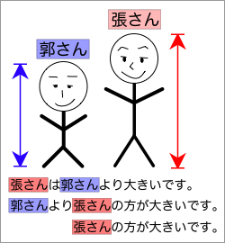
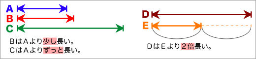

〜より

「ＡはＢより大きい。」、「ＢよりＡの方が大きい。」、「Ｂの方が大きい。」はすべて同じ内容を表わす文である。
「ＡはＢよりずっと大きい。」や「ＡはＢより少し大きい。」のようにすることで、違いの程度を表わすことができる。また、「ＡはＢより３倍大きい。」のように、形容詞の前に『数字＋単位』を表わすことで、差をより具体的に示すことができる。

- ＡはＢより〜
-
- 台湾は沖縄より（少し）気温が高い。
- 日本は台湾より約１億人多い。
- この店は、あっちより5000円以上安いですよ。
- ＢよりＡの方が〜
-
- 杉本くんより神田くんの方が大きいです。
- 雨より晴れの方がずっといい。
- 台湾より日本の方が３倍くらい物価が高いです。
- そっちの肉よりこっちの方が1000円高い。
- Ａの方が〜
-
- 杉本くんの方が小さいです。
- 加藤くんの方が８歳若いよ。
- こっちの店の方が何倍もおいしいね。
- 物価【名詞】（ぶっか〔0〕）
- ずっと【副詞】（ずっと〔0〕）［※違いの大きさを表わす］
- 何倍も
〜ほど
「ＡはＢほど大きくない。」のように、『ほど……否定形』の形も比較を表わす表現である。
また、「Ａほど大きいものはない。」や「Ａほど大きいものは他にはない。」の形では、『Ａが一番大きい』と同じ意味を表わす。
- ＡはＢほど〜ない
-
- 勝俣くんは神田くんほど大きくない。
＝ 神田くんの方が勝俣くんより大きい。
- 日本はロシアほど大きな国ではありません。
＝ 日本はロシアより小さな国です。
- 劉さんは張さんほど日本語が上手ではありません。
- 劉さんは張さんほど日本語を上手に話すことができません。
- 近藤さんは牧原くんほど速くは走れません。
- 池田くんも走るのが速いですが、牧原くんほどではありません。
- Ａほど〜ものは（ほかには）ない
-
- 神田くんほど大きな人はいない。
＝ 神田くんが一番大きい。
- マグロの刺身ほどおいしいものは、他に（は）ないと思います。
＝ マグロの刺身が一番おいしいと思います。
- ロシア【固有名詞】（ロシア〔1〕）Russia
- マグロ［鮪］【名詞】（まぐろ〔0〕）
- 刺身【名詞】（さしみ〔3〕）
〜に比べて・〜に比べると
「ＡはＢに比べて大きいです。」のように、『〜に比べて〜』の形も比較を表わす表現である。
「〜に比べて」は、「ＡはＢに比べて画面が大きいです。」のように『ＡはＢに比べて［名詞］が〜』の形になることも多い。
- ＡはＢに比べて（…が）〜
ＢはＡに比べて（…が）〜
-
- アメリカは日本に比べて犯罪が多い。
- 日本に比べてアメリカは離婚率が高いです。
- この本は他の本に比べてわかりやすいです。
- ＡはＢに比べると（…が）〜
ＢはＡに比べると（…が）〜
-
- 苗栗は台北に比べると物価が安いです。
- 東京に比べると、新潟は小さな都市です。
- カナダに比べると、日本の方がだいぶ暖かいです。
- 犯罪【名詞】（はんざい〔0〕）
- 離婚率【名詞】（りこんりつ〔2〕）
- 〜率（例：出席率、失業率、成功率）
- カナダ【固有名詞】（カナダ〔1〕）Canada
- だいぶ【副詞】（だいぶ〔0〕）